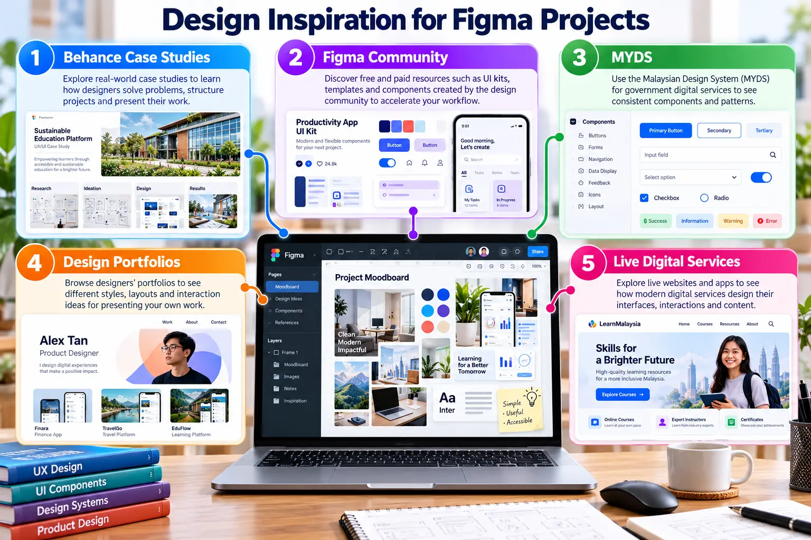
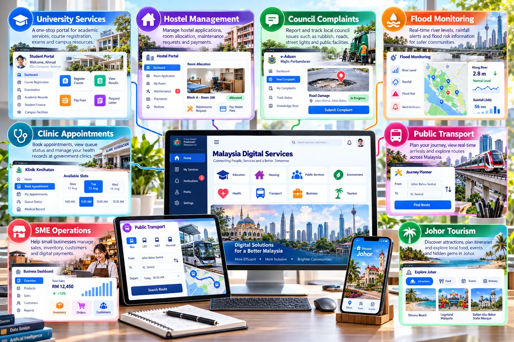

Study the reasoning, not only the appearance
A useful reference should reveal the user problem, information structure, interaction flow, component system and evidence used to improve the design.

Recommended inspiration sources
| Source | What to examine | Best use |
|---|---|---|
| Behance: Figma projects | Problem statements, research, wireframes, visual development and presentation. | Complete case-study structure |
| Behance: dashboard design | Data hierarchy, filters, metrics, charts, tables and navigation. | Dashboard inspiration |
| Figma Community | UI kits, components, variables, wireframes, icons and prototype patterns. | Reusable learning resources |
| Malaysia Government Design System | Malaysian components, patterns, accessibility and implementation guidance. | Local public-service context |
| Case Study Club | Product decisions, constraints, iteration and measurable outcomes. | UX reasoning |
Examples already curated for students
The course repository includes references for hostel management, student systems, Shopee redesign, Sarawak products, food ordering, real estate, travel and an automated machine-learning platform.

Prototype ideas for the Malaysian context
| System idea | Primary user task | Suggested evidence |
|---|---|---|
| University services | Register courses, view results and request official documents. | User flow and responsive dashboard |
| Hostel management | Apply for a room, report maintenance and check payment. | Form, status states and notification flow |
| Council complaints | Report an issue, add location evidence and track resolution. | Map flow and status timeline |
| Flood monitoring | View risk levels, rainfall and community alerts. | Data dashboard and warning hierarchy |
| Clinic appointments | Select a service, book a slot and monitor queue status. | Appointment prototype and error states |
| Public transport | Plan a journey and compare routes or arrival times. | Mobile journey planner |
| SME operations | Monitor inventory, orders, customers and sales. | Operational dashboard |
| Johor tourism | Discover attractions and build a personalised itinerary. | Search, filter and saved itinerary |
Reference analysis activity
Select three complementary references
Choose one complete Behance case study, one reusable Figma Community resource and one Malaysian reference such as MYDS or a live service.
Analyse before adapting
Record the user problem, navigation, visual hierarchy, components, responsive behaviour, accessibility and evidence of testing.
Create an original direction
Combine justified principles rather than copying a screen. Adapt terminology, data, users and workflows to the selected Malaysian context.
Required evidence
- A reference matrix containing at least three sources.
- A moodboard with annotations explaining what may be adapted.
- An original user flow and wireframe.
- A component set and interactive prototype appropriate to the Malaysian context.
- Attribution for templates, icons or resources used.
Responsible use: Inspiration is not permission to copy. Do not reproduce another designer's layout, branding, content or illustrations as your own work.